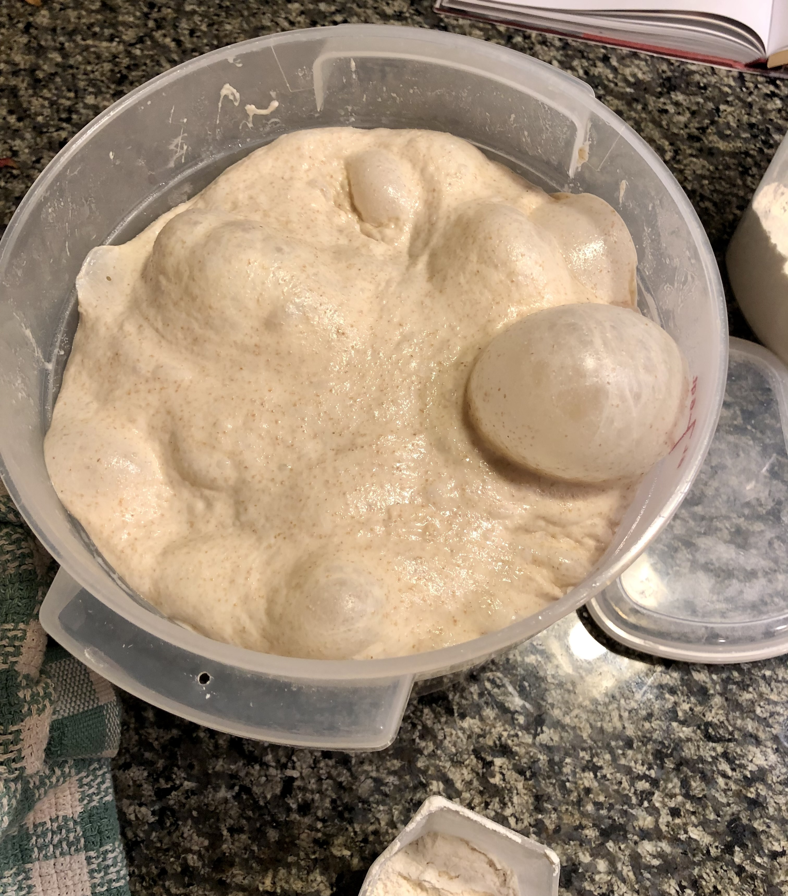
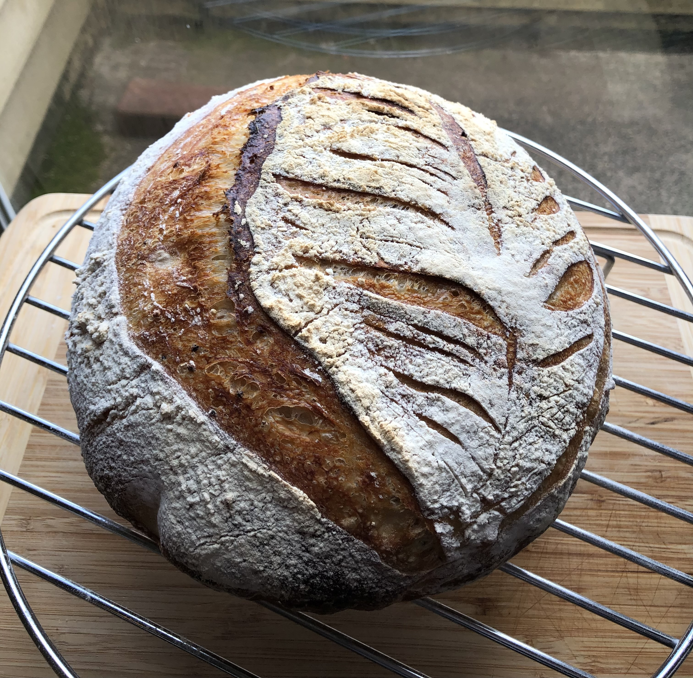
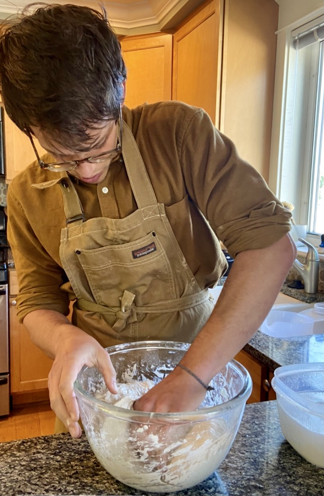
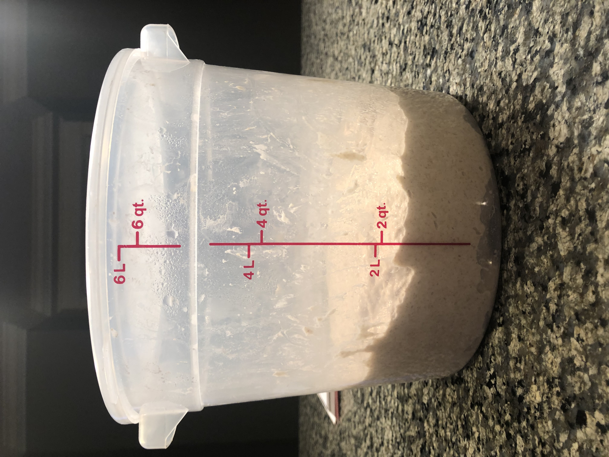
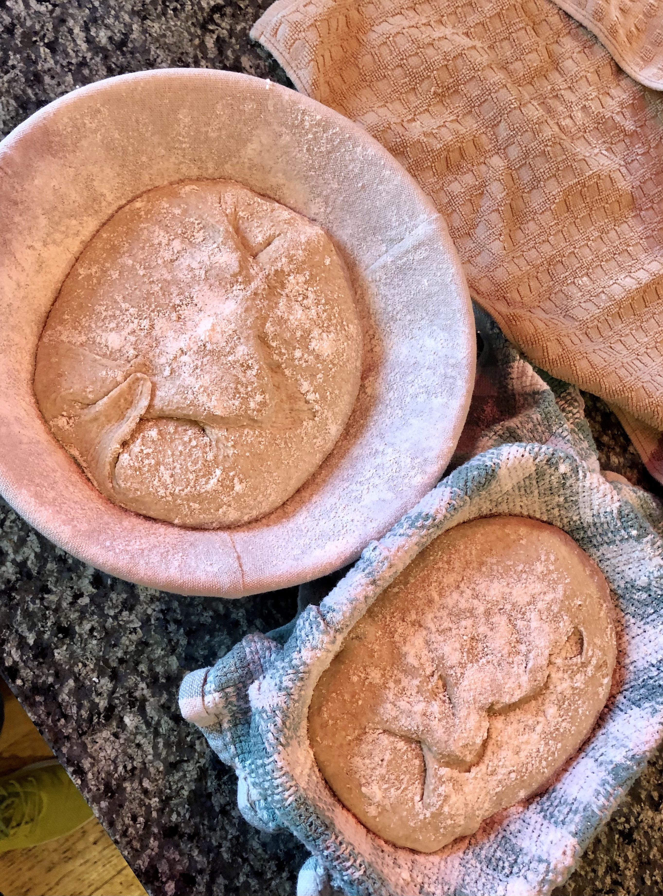
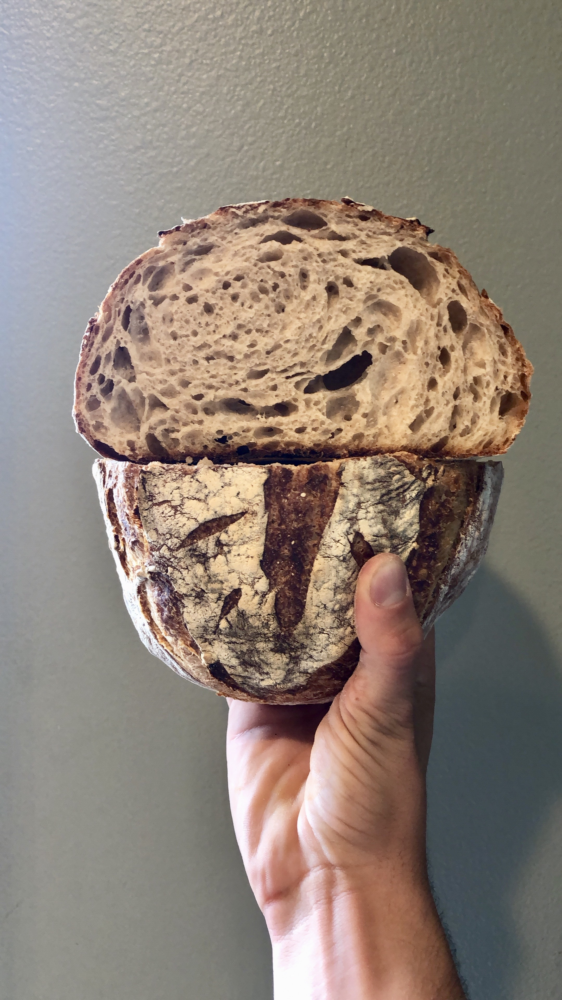
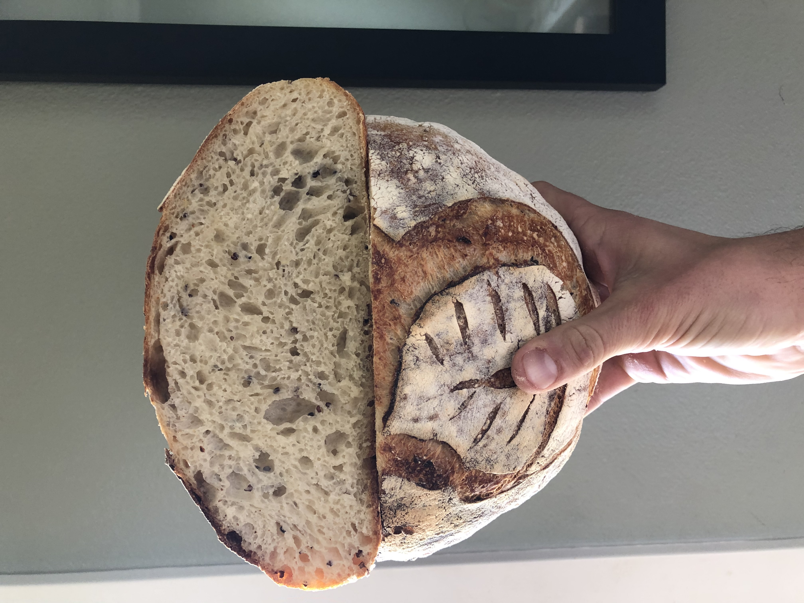

All it takes to create a sourdough starter is water, flour, and a lot of waiting. Of course, you can always
buy one of those little bags of dusty flour on the internet that claims to be dried up remnants of some 200
year old French sourdough starter, or befriend your neighborhood sourdough baker (me) and ask for a dollop
of theirs.
I find it much more enjoyable and rewarding to create your own from scratch. Every starter is different.
Your starter will form from the bacteria it interacts with in the air in your home, the surrounding environment,
and the hands (or wooden spoon) that you use to mix with. Your starter will always be uniquely yours.
I’ve come across many different ratios, proportions, and interesting ingredients that go into a baker’s starter.
But to put it simply, here is how I made mine:
What you'll need:
Flour- I use 50g of bread flour and 50g rye flour (or whole wheat)
Water- the warm kind
A medium sized mason jar, or similar container
Anything to cover the top (jar lid, towel and rubber band)
A wooden spoon or a wonderfully clean hand
A kitchen scale (please buy one if you don’t have one, the metric system makes so much sense)
Day 1
Mix 50g of bread flour, 50g of rye flour, and 100g of warm water in your mason jar.
Mix that around for a bit until it’s nice and smooth, like pancake batter
(pancake recipe on it’s way). Smell your starter, it’ll probably have a nutty
and sweet aroma. Cover and let rest.
Congrats! Day 1 is over.
Day 2
Roughly 24 hours later.
Hello again. Grab your starter and smell it. It’s likely that it just smells a lot
like wet flour still. Next, dump out (compost) roughly 50-75% of your starter.
Mix 50g of bread flour, 50g of rye flour, and 100g of warm water in your mason jar.
Mix that around for a bit until it’s nice and smooth. Cover and let rest.
Hooray! Day 2 is over.
Day 3
Hi there! Grab your starter and smell it. By now, your starter is potentially
showing some activity and a change in the smell. The smell should still be sweet
but with an edge of acidity or alcohol. If you have ever smelled a loaf of sourdough,
it’s fairly easy to recognize. You may also begin to see little bubbles along
the sides of the jar. If it still smells like wet flour, worry not,
we’ve got plenty of time. Next, dump out (compost) roughly 50-75% of your starter.
Mix 50g of bread flour, 50g of rye flour, and 100g of warm water in your mason jar.
Mix that around for a bit until it’s nice and smooth. Cover and let rest.
Woohoo! Day 3 is over.
Day 4 and beyond...
Repeat day 3 until your starter has an aroma that I can only describe as nutty,
earthy, sweet, boozy, and acidic… If that makes no sense, go buy a loaf of sourdough
from your local bakery and take note of the flavors and aroma. Additionally,
a healthy, mature, and well-fed starter should be bustling with activity.
Day after day, you’ll notice more and more CO2 bubbles in your starter,
sprouting up throughout the entire mixture, making it light and airy.
Your starter will expand and contract as the lactobacilli bacteria feed on
the proteins of the flour and produce CO2 bubbles (the beautiful gas responsible
for all of the delicious air pockets in bread).
Give yourself a high five! You’ve successfully made a sourdough starter.

Healthy Sourdough Starter
Maintaining a Sourdough Starter
Here are my basic instructions for maintaining a sourdough starter:
Feeding the starter: discard 50-95% of your starter, feed with 100g of warm water and 100g of flour,
mix well into a batter consistency, replace lid, put back in fridge or on the counter top.
I usually do a mix of flour as 50g of whole wheat or rye with 50g all purpose or bread flour.
This is optional since any/all types of flour will work, but the added whole wheat/ rye
adds protein which will help kickstart your starter activity.
Keep it in the fridge if you are not consistently baking/ using the starter.
While in the fridge, especially if it’s long term, feed the starter about once a week or every
two weeks. I’ve heard of people going month(s) without feeding their
starter if it’s in the fridge.
Before you plan on baking or using the starter for tortillas, etc. take it out of the fridge
about 2 days before, discard about 80-90%, and feed it at least 2-3 times before using it
to get it back up to room temperature and ensure it is nice and active.
Since your starter is in a mason jar with a lid, you’ll have to burp it every once in a while
to release the CO2, or cover the jar with a dish towel and rubber band to allow air flow,
or just leave the jar lid slightly loose.
Reminder that it is almost impossible to kill a sourdough starter, even if it has been weeks
or months since feeding it, just pour out 95% of it and restart feeding. It’s perfectly fine
if there is a layer of water, or hardened starter on the top of your starter.
The only things that I can think of that would truly kill a starter are: fuzzy mold,
microwaving it, pouring bleach/ other weird things in it, or throwing it away.
Otherwise it is most likely just dormant or a little on the funky side.

Basic Sourdough Country Loaf Recipe
Of all the wonderful sourdough creations that I have had the pleasure of making
(and eating) over the years, there is one that will always be my true love. That beautiful,
glutinous creation is the Rustic Country Loaf.
I love everything about this bread, the choose-your-own-adventure style adding of ingredients,
the endless artwork created from scoring your dough, the way the ball of dough erupts inside
your Dutch oven, and the delicate and delicious caramelization of your crust to finish off
it’s journey.
What you’ll need:
Clear bucket or large bowl for mixing dough
Medium container for mixing the leavain
A 4-5 liter Dutch oven (cast iron or enamel will work)
A lame or a sharp knife/razor to score your dough
2 Banneton baskets or kitchen towel-lined bowls
2 plastic grocery bags (shower caps or damp kitchen towels work too)
& of course, the following ingredients for your dough.
200g levain
750g warm water, plus 50g more for mixing in salt
100g rye or whole wheat flour
900g bread flour or AP flour
21g sea salt or Kosher salt (iodized salt is evil)

Mixing dough by handMixing the Levain
50g of ripe, active sourdough starter
70g bread flour, 30g rye flour (or 100g of bread or AP flour)
100g warm water
Mix well by hand in your container and let sit for about 5 hours.
Next we make our dough.
Once your levain is nice and bubbly (it should resemble your awesomely active starter),
you are ready to make your dough. If you’re not sure, use the float test.
Fill a cup with warm water and drop a little bit (1-2 tbsp) of your leavain into the water.
If it floats, HOORAY! You are good to go! if it sinks, your levain likely needs more time
or your starter is a little lazy (we’ve all had lazy weekends, so no worries).
Now that your levain is floating like The Titanic (pre-iceberg),
let’s get out your bucket or bowl and mix the following ingredients together:
200g levain
750g warm water
100g rye or whole wheat flour
900g bread flour or AP flour
Mix by hand until fully incorporated and wait 20 minutes.
Add your 21g of sea salt to 50g of warm water and swirl around to partially dissolve.
Add to dough mixture and thoroughly incorporate using the pinch method,
pinching the dough like a claw and breaking it into chunks. Now is an excellent time
to add any bonus ingredients (sesame seeds, roasted garlic and rosemary,
toasted pine nuts, or olives, etc.) Do not be afraid to get wild with your ingredients!
Add a few stretch and folds to finish it off and smooth out the dough.
Congrats! You made some tasty dough, high five yourself and let it rest for about 40 minutes.

Ready for stretch & folds!
After your dough rests, it’s time for your first stretch and fold.
I like to have a bowl of warm water nearby to keep my hands wet to help
prevent sticky dough hands. With your dough in the bucket, reach under
one corner of the dough with your wet hand, grab the dough gently and
pull that corner straight up and fold the dough over onto itself.
Rotate your bucket 90 degrees and repeat, continue working your way
around your dough, pulling up and folding any corners of your dough into
the center until a ball has formed (about 6-8 folds).
Let dough rest for about 40 minutes and repeat the stretch and fold process
2-3 more times, resting about 40 minutes each time.
Let the dough rest for 2-3 more hours or until the dough has roughly doubled in size.
Next, it is time for my favorite part: shaping the loaves!
With floured hands, turn the dough out onto a lightly floured countertop.
Treat your dough like it’s your baby, being gentle with your dough will help to
maintain all those delicious bubbles that are essential for the final rise.
Flip your giant blob of dough over once or twice to lightly coat the outside of your dough,
I’ve found this makes it a little easier to handle.
Next take your bench scraper and cut your blob of dough into two blobs of dough, yay twins!
Set one of your blobs aside.
Lay your first dough blob in front of you in a somewhat diamond shape with corners pointing
left, right, top, and bottom. With floured hands, start by folding the bottom corner over
onto itself (similar to the stretch and fold), pat it gently to bring any large air pockets
to the surface and gently pop these. Repeat this with the left, right, and finally the top corner.
Your dough should resemble an envelope that is a bit taller and skinnier than it is wide.
Next, take your “tall, skinny envelope,” grab the top and gently begin rolling the dough
towards you until the dough is completely rolled up. It should now resemble a burrito.
You will now want to pinch the ends of your burrit-dough (see what I did there?)
shut so that air doesn’t escape during baking. Pinch and tuck the open ends of your
dough burrito under itself, creating a smooth, uniform, and elliptical shaped loaf of dough.
Place the loaf into a well floured banneton basket or well floured kitchen towel-lined bowl
with the seam side facing up. Let it rest at room temperature for one hour.
Repeat this process with your other blob of dough.
Once both loaves are in their baskets, place the baskets inside a plastic bag with the ends tied off
(you can substitute plastic wrap, a shower cap, or a damp kitchen towel to cover your loaves).
Place these in the fridge overnight.

Loaves ready for baking
Next morning, preheat your oven to 500 degrees F with your dutch oven inside.
Take your loaves out of the fridge, remove the plastic bag or covering,
and poke them to make sure they are ready to bake. When you poke your loaf,
creating an indent, the dough should spring back slowly and leave a faint indent
where you poked. This is widely known as the poke test. Pick a loaf to bake first and
return the other one to the fridge.
With your oven preheated, carefully remove your hot dutch oven and place on the stove top.
I would strongly recommend never forgetting to use oven mitts for this step,
accidentally grabbing a hot dutch oven with your bare hands is surprisingly zero fun.
Now take your supremely proofed dough in it’s basket and gently drop it into the hot dutch oven
by inverting your banneton basket directly over your dutch oven.
Now let’s get out those razors because it’s time to score your loaf!
Scoring helps release steam from your loaf and improves oven spring while baking.
Using your lame or a very sharp knife or razor, score the top of your dough any way you desire.
I would recommend a single slash along the top to start as it is a simple classic that is used
by bakers everywhere. The scoring should be done in a swift, smooth slashing motion that just
slices through the floury dough exterior and exposes the wet, bubbly dough underneath.
With your loaf inside, replace the lid back on your dutch oven and place the dutch oven back
in your oven. Immediately turn down the temperature to 475F and bake for 20 minutes.
Remove the lid from your dutch oven and take a peek inside. Your loaf should have expanded greatly,
bursting open where you scored the loaf.
Bake your loaf for another 15-20 minutes with the lid off, or until the crust has reached
a deep caramelized golden brown. Don’t be afraid to push the limits of caramelizing your crust,
a loaf with a few slightly burnt edges is surprisingly delicious. Just make sure not to burn the bottom.
Repeat this process with your other loaf. As much as I daydream about tearing straight into
a hot loaf of bread with my bare hands, I would still recommend letting the loaves cool on a
cooling rack for at least an hour. Since your bread just came out of a super hot oven,
the center is still cooking as it cools.
Enjoy your beautiful creation by itself, with some butter, as a PB&J, or really,
however you want. You are the bread master!


With practice, you'll be able to bake beautiful, fluffy loaves of sourdough bread.